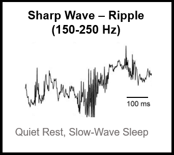

Distinct Neural Populations in the Hippocampus Shift Activity During and After Experience
Background
 Sharp wave - Ripple (SWR) events are brief, high frequency oscillations produced by the hippocampus that occur during “off-line” states such as slow-wave sleep and immobile rest. These events have been heavily implicated in learning and memory and often co-occur with the replay of neural activity patterns associated with recent experience. It is thought that this replay, as well as the SWR events themselves, facilitate memory storage and retrieval by coordinating activity across the hippocampus and downstream memory storage sites in the neocortex so that the hippocampus can transmit recently stored information about experience. This is thought to drive plasticity across neocortical networks, resulting in long-term storage of that information.
However, many questions still remain about how SWRs facilitate memory storage. Particularly, although the rate of SWRs dramatically increases after learning, they still occur in the absence of a recent salient event. Furthermore, SWRs also occur during pauses in active behavior and the “replay” during these awake events can often predict future behavior, suggesting these events also play a role in planning and memory retrieval. So to better understand the role of SWRs in learning and memory, as well as the neural activity patterns that allow these events to facilitate different memory processes, I analyzed in vivo electrophysiology recordings from the brains of freely moving rats, and compared SWRs and their associated replay events before, during, and after performance on a spatial memory task. In vivo electrophysiology allows for the recording of local field potential (LFP), which reflects large scale population activity of neurons surrounding the recording site, as well as the action potentials of single neurons. LFP data can be filtered at various frequencies of interest, such as theta (6-12 Hz) and slow gamma (25-55 Hz).
Results
I found that a subclass of hippocampal neurons shift their activity patterns within SWRs during a learning experience, and this shift persists into the post-experience rest period. Interestingly, this shift in activity resulted in more tightly coordinated spike timing with other hippocampal neurons. To put it another way, this particular neural subclass fired “out-of-sync” during SWRs before the experience, but then synchronized with the rest of the network in SWRs during and after experience. This finding sheds light on how experience alters activity across the hippocampal network to support learning and memory.
I predict that the network-level impact of this activity shift is a greater ability for the hippocampus to communicate replay information to downstream storage sites, since higher ensemble synchrony would amplify the signal and make it more robust to noise or interference. However, further experiments involving recordings of both the hippocampus and downstream storage targets will need to be done to test this hypothesis.
Results

The Hippocampus: An Overview
Fringilla nisl. Donec accumsan interdum nisi, quis tincidunt felis sagittis eget. tempus euismod. Vestibulum ante ipsum primis in faucibus vestibulum. Blandit adipiscing eu felis iaculis volutpat ac adipiscing accumsan eu faucibus. Integer ac pellentesque praesent tincidunt felis sagittis eget. tempus euismod. Vestibulum ante ipsum primis in faucibus vestibulum. Blandit adipiscing eu felis iaculis volutpat ac adipiscing accumsan eu faucibus. Integer ac pellentesque praesent. Donec accumsan interdum nisi, quis tincidunt felis sagittis eget. tempus euismod. Vestibulum ante ipsum primis in faucibus vestibulum. Blandit adipiscing eu felis iaculis volutpat ac adipiscing accumsan eu faucibus. Integer ac pellentesque praesent tincidunt felis sagittis eget. tempus euismod. Vestibulum ante ipsum primis in faucibus vestibulum. Blandit adipiscing eu felis iaculis volutpat ac adipiscing accumsan eu faucibus. Integer ac pellentesque praesent.
Place Cells, Sharp Wave Ripples, and Replay
Fringilla nisl. Donec accumsan interdum nisi, quis tincidunt felis sagittis eget. tempus euismod. Vestibulum ante ipsum primis in faucibus vestibulum. Blandit adipiscing eu felis iaculis volutpat ac adipiscing accumsan eu faucibus. Integer ac pellentesque praesent tincidunt felis sagittis eget. tempus euismod. Vestibulum ante ipsum primis in faucibus vestibulum. Blandit adipiscing eu felis iaculis volutpat ac adipiscing accumsan eu faucibus. Integer ac pellentesque praesent. Donec accumsan interdum nisi, quis tincidunt felis sagittis eget. tempus euismod. Vestibulum ante ipsum primis in faucibus vestibulum. Blandit adipiscing eu felis iaculis volutpat ac adipiscing accumsan eu faucibus. Integer ac pellentesque praesent tincidunt felis sagittis eget. tempus euismod. Vestibulum ante ipsum primis in faucibus vestibulum. Blandit adipiscing eu felis iaculis volutpat ac adipiscing accumsan eu faucibus. Integer ac pellentesque praesent.